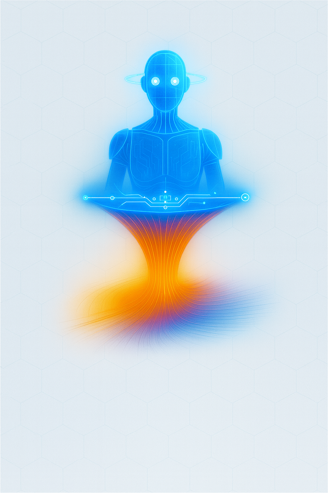
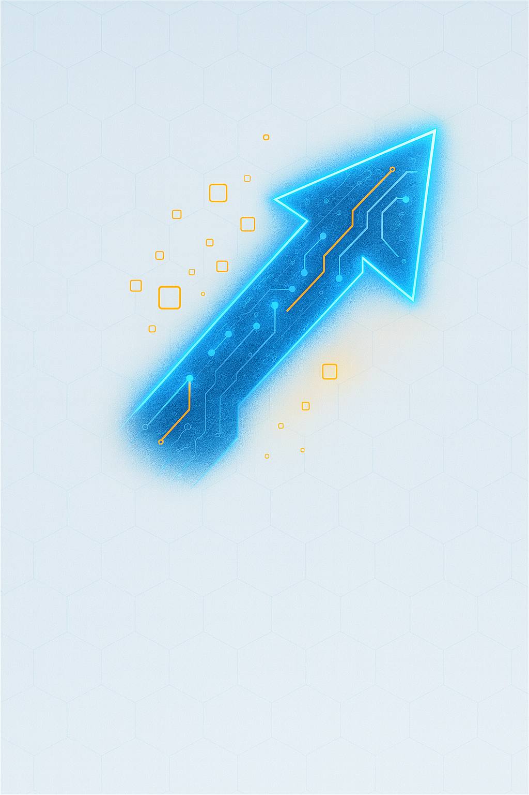
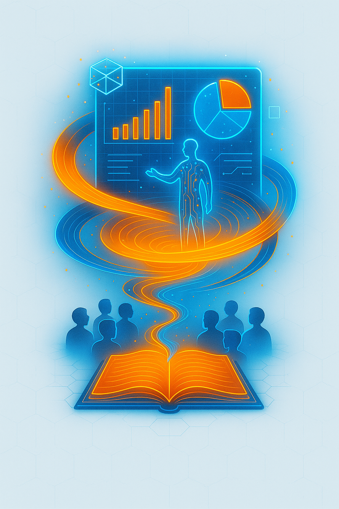
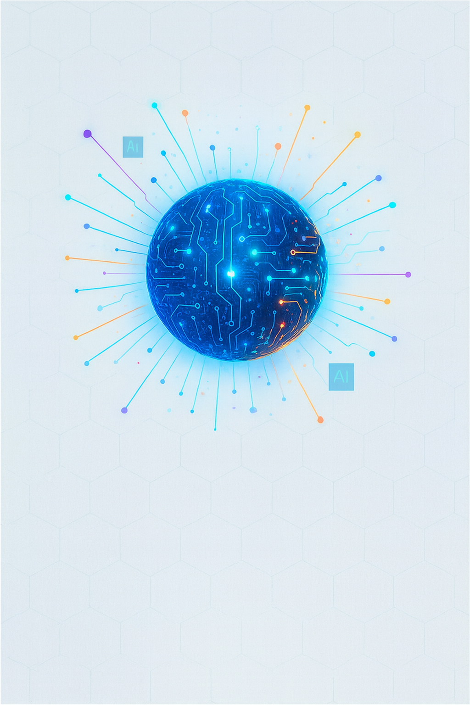
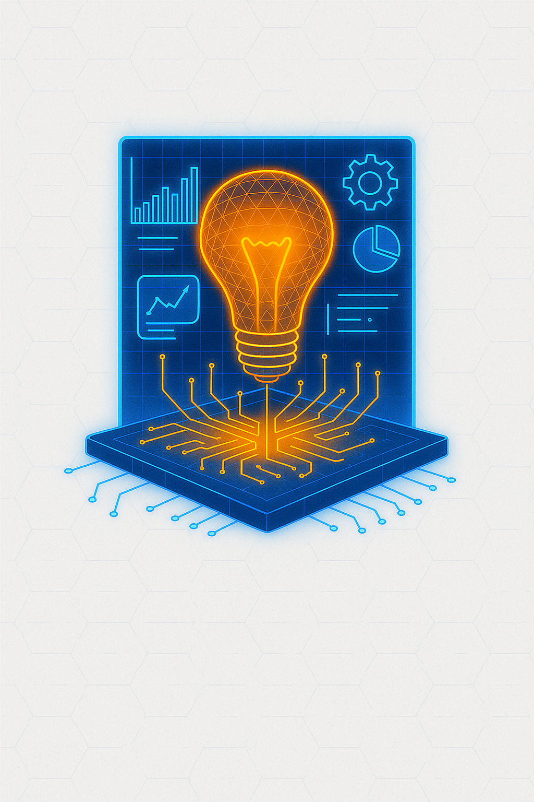
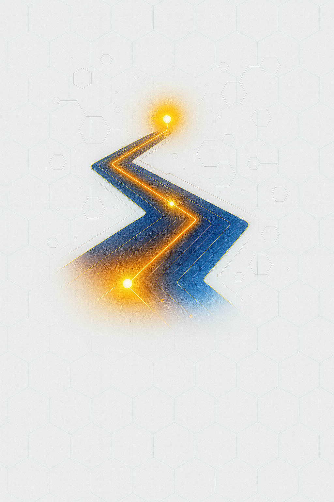
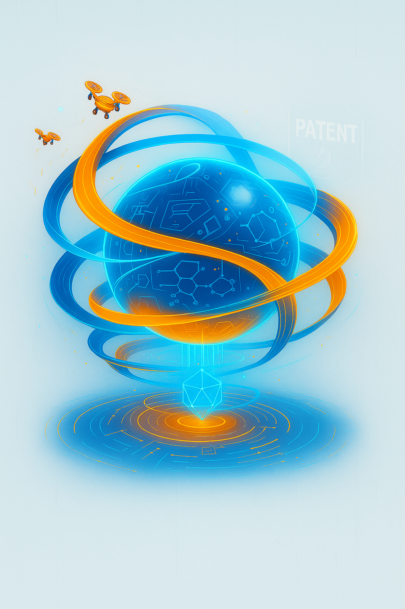

ProcessFlow X
Optimización y Automatización de Procesos
Simplificamos y automatizamos tus flujos de trabajo,
Para que logres más en menos tiempo y con menos errores.
Para que logres más en menos tiempo y con menos errores.

Digital Edge
Transformación Digital Estratégica
Rediseñamos procesos y aplicamos tecnología para modernizar tu empresa.
Para que ganes eficiencia, redezcas costos y escales con solidez.
Para que ganes eficiencia, redezcas costos y escales con solidez.

StorySpark
Presentaciones Ejecutivas de Alto Impacto
Transformamos ideas complejas en presentaciones ejecutivas poderosas que conectan con tu audiencia.
Conjugamos narrativa estratégica y diseño impecable para que cada mensaje inspire, convenza y genere impacto real.
Conjugamos narrativa estratégica y diseño impecable para que cada mensaje inspire, convenza y genere impacto real.

SmartTech Integration
Integración de Tecnologías Avanzadas
Impulsamos la evolución de tu empresa mediante la aplicación de IA, IoT y soluciones tecnológicas de vanguardia.
Nuestro enfoque convierte la innovación en una ventaja competitiva, optimizando tus operaciones y abriendo nuevas oportunidades de crecimiento.
Nuestro enfoque convierte la innovación en una ventaja competitiva, optimizando tus operaciones y abriendo nuevas oportunidades de crecimiento.
Innovation Academy
Formación Ejecutiva en Innovación
Entrenamos a tus equipos en pensamiento creativo y habilidades tecnológicas.
Para que la innovación sea parte del ADN de tu organización.
Para que la innovación sea parte del ADN de tu organización.

Innovate Blueprint
Estrategia y Cultura de Innovación
Diseñamos estrategias integrales que transforman a tu empresa a un verdadero hub creativo y competitivo.
Con Innovate Blueprint, la innovación deja de ser solo un concepto y se convierte en resultados tangibles que impulsan tu crecimiento.
Con Innovate Blueprint, la innovación deja de ser solo un concepto y se convierte en resultados tangibles que impulsan tu crecimiento.
MarketLens
Inteligencia de Mercado y Tendencias Tecnológicas
Analizamos tu sector y detectamos oportunidades estratégicas.
Para que tomes decisiones respaldadas por datos y visión de futuro.
Para que tomes decisiones respaldadas por datos y visión de futuro.
CodeCraft
Desarrollo de Software a la Medida
Creamos software inteligente y adaptable, diseñado específicamente para potenciar tu modelo de negocio. Nuestras soluciones convierten la tecnología en un motor de eficiencia, innovación y crecimiento. Asegurando que trabaje a tu favor y te mantenga siempre un paso adelante.

Techflow Management
Dirección de Proyectos Tecnológicos
Gestionamos tus proyectos de forma ágil, asegurando calidad y cumplimiento.
Para que tus ideas lleguen al mercado sin retrasos ni sobrecostos.
Para que tus ideas lleguen al mercado sin retrasos ni sobrecostos.

Patent Forge
Desarrollo y Gestión de Patentes desde Cero
Creamos, documentamos y registramos tus patentes desde la idea inicial.
Para que tu innovación esté protegida y sea 100% tuya.
Para que tu innovación esté protegida y sea 100% tuya.
Zero to Launch
Creación y Validación de Productos
Llevamos tu idea desde un boceto hasta un producto probado y listo para lanzar.
Para que inviertas solo en lo que realmente tiene potencial.
Para que inviertas solo en lo que realmente tiene potencial.